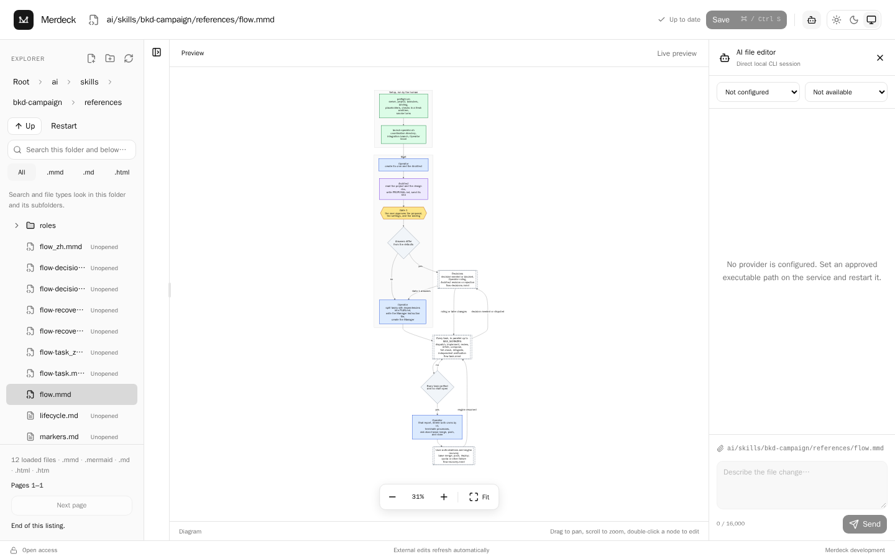
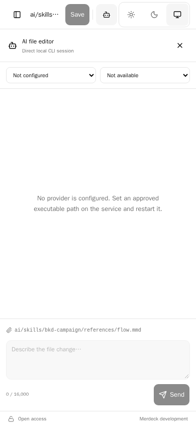

Five tracks, measured against v0.16.0 running on a 1440×900 desktop and a 390×844 phone. Each track is independently shippable; the order below is the proposed order.
One ramp for the whole interface, with 11px as the floor.
| Token | Size | Sample | Used for |
|---|---|---|---|
--text-xs | 11px | 0 / 16,000 · 12 files | counters, footers, secondary metadata |
--text-sm | 12px | flow-task_zh.mmd | explorer rows, status bar, transcript meta |
--text-base | 13px | Describe the file change | controls, buttons, inputs, transcript |
--text-lg | 15px | docs/architecture.md | pane titles, header file name |
--text-xl | 17px | Document body | Markdown and HTML reading surface |
Path-like strings move to a monospace stack, so flow-task_zh.mmd stays scannable next to flow-task.mmd.
Keep the neutral canvas. Add one accent and use it for every “this one” signal.
oklch token in :root and .dark has zero chroma. Nothing carries brand, selection, focus or progress through colour, and the primary button reads the same as a disabled one at a glance.Accent carries the primary button, the selected file row, the focus ring and the live-preview dot. Warning carries stale previews and unsaved drafts, which today share the same grey as inert text. Danger stays reserved for delete and refusal.
About 150px of chrome above the first file row instead of 346px — roughly nine more visible rows.

The heading, breadcrumb and Up/Restart fold into one 40px row. The type filter joins the search field. The explanatory sentence, the per-row Unopened label and two of the three trailing counter lines are gone.
Wrap to a second line instead of middle-truncating.
flow-decisio…, flow-recove… and flow-task_z… — indistinguishable from each other.A row grows from 34px to 34–48px. The dot before the name replaces the Unopened label and returns that width to the name.
The AI panel becomes a bottom sheet. The document stays on screen.

The service owns one project root and serves the built interface from the same origin.
The service owns one project root.
The sheet opens to 55% height with a drag handle, and defaults to closed under 700px regardless of the stored desktop preference. Theme and display controls move into the header overflow. A three-way bottom bar replaces the top tab strip, and every tap target reaches 44px — today the engine and model selects are 32px.
oklch(0.55 0.09 195) above, or a different hue — it is the one visible brand decision here.